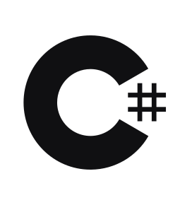

Portfolio
My work
in visuals.
Screens and video clips from Refished, Godot experiments and other game work: menus, systems, prototypes and worlds in motion.
Projects
What I've
built.
Choose a project from the sidebar to explore the game, experiments and community spaces I keep building.
Project index
Mods
Small tools,
happy players.
About
Indie dev & Subnautica modder,
passionate about games.
Background
I'm Jimmy, an indie game developer working with Unity / C# and Godot / GDScript, and the modder known as qopp on Nexus Mods.
My main project is Refished, a free unofficial fan remake of FAG:F, the game that has inspired me since 2019. I also build small Godot experiments and tools. Alongside them I maintain Subnautica mods for the BepInEx / Nautilus ecosystem: HoverFish Hats, a cosmetic mod with six fully configurable hats, and SNHardcorePlus, a BepInEx port that keeps qwiso's hardcore survival mod alive after QModManager.
698
unique downloads on Nexus Mods
2
published Subnautica mods
1+
year of independently shipping games
Services
C# Programming: Mechanics, systems and game logic in Unity.
Godot / GDScript: Interactive tools, procedural animation and 2D physics experiments.
Game Design: Gameplay, balancing and player experience.
Modding & Porting: BepInEx / Nautilus plugins and QModManager to BepInEx ports.
Translations: Content and documentation localization (Spanish / English).
Currently
Refished: in development, a fan remake of FAG:F in Unity.
Godot projects: Tree?, CalculatorGD and AquaRings — experiments in procedural animation, UI and 2D physics.
Subnautica mods: new content, configs and BepInEx ports on Nexus Mods.
Open for freelance projects and collaborations.
Tech Stack

Unity 3D
C# Godot 4.7
GDScript
Godot 4.7
GDScript

Git GitHub
GitHub

Game Design
Fandom Wiki BepInEx Nautilus Subnautica ModdingLanguages
 Spanish
(native) · English (B2)
Spanish
(native) · English (B2)
Availability
Open for freelance projects and collaborations.
Contact
Have an idea?
Let's make it happen.
Email me for projects and collaborations, Discord for the mods community, and everything in between.
Discord
Click to copy username.